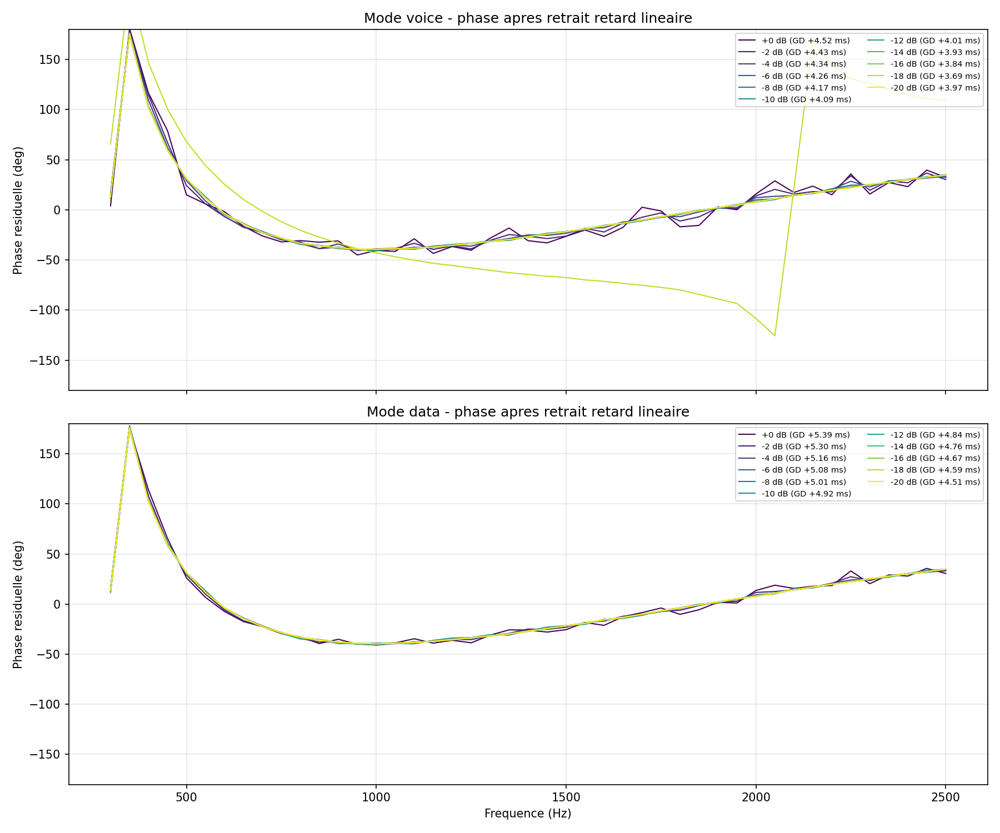
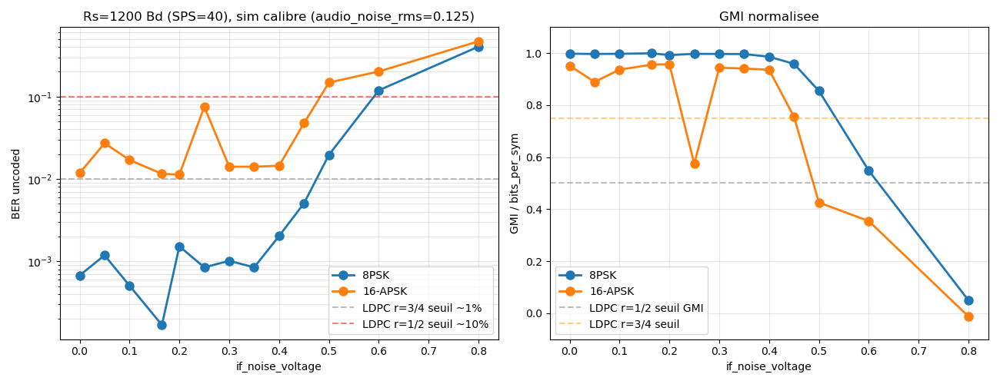
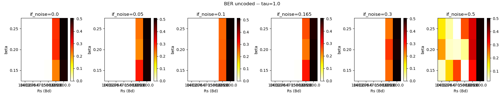
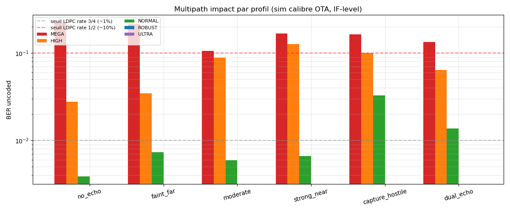
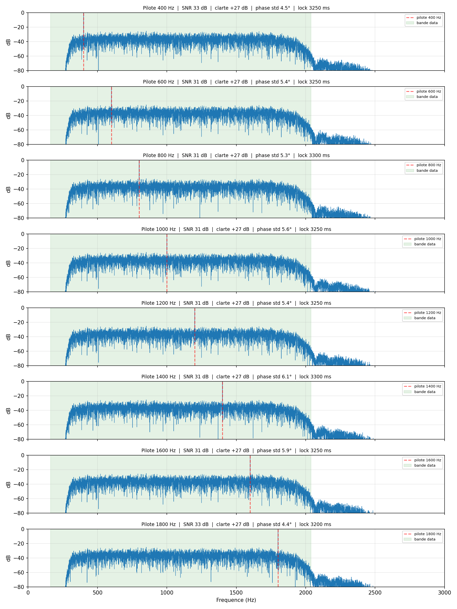
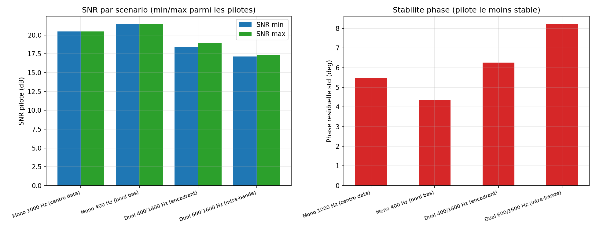
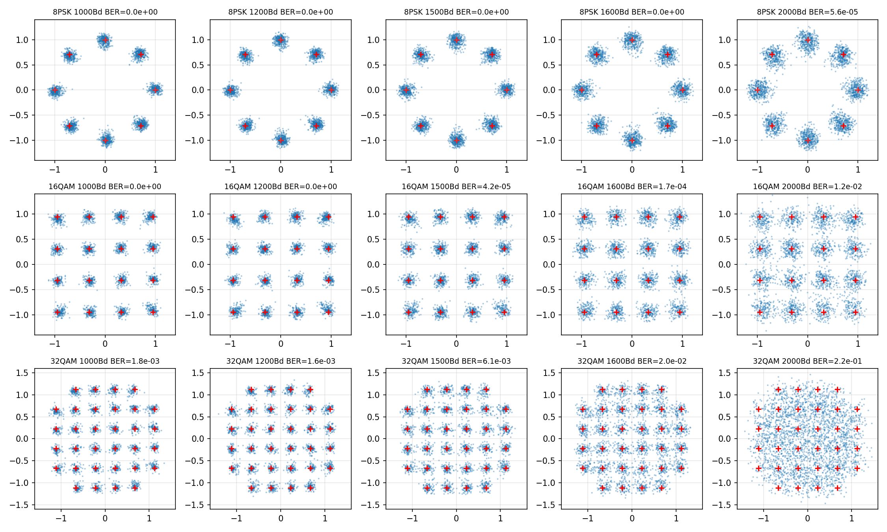
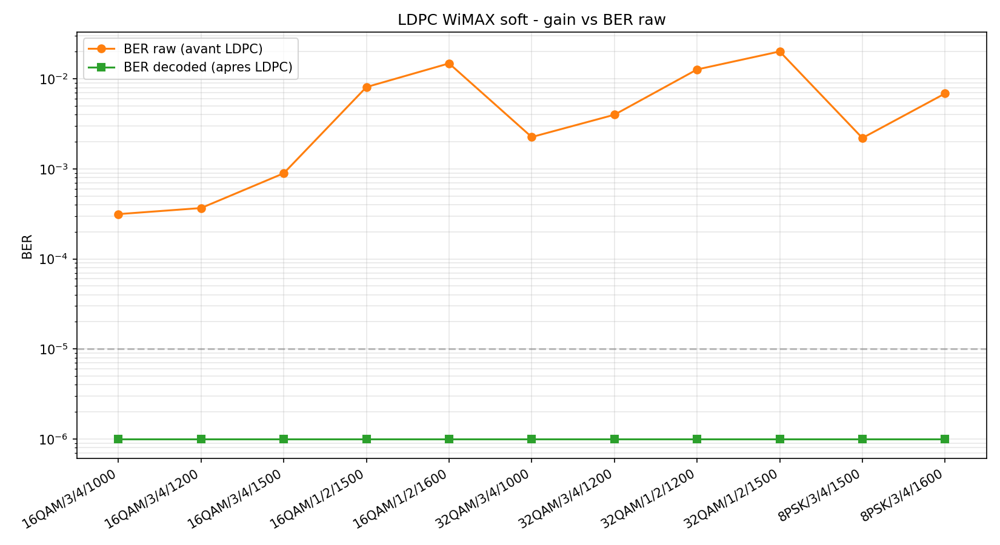

HB9LC — dimanche 31 mai 2026
Un modem audio pour transmettre des images sur la FM amateur
Du concept OFDM abandonné jusqu'au modem V3 multi-profil
HB9TOB · projet open source
HB9TOB · projet open source
Au programme
Le parcours en 15 chapitres
01RustPIC — la tentative OFDM
09Le décodeur batch et sa grille
02L'étude du canal NBFM
10Décoder au fil de l'eau
03Essais 16-APSK / FTN
11modem-2x → V3-Turbo
04Pilotes et choix de débit
12Le sondeur de canal
05Constellations retenues
13Intégration SDR
06LDPC, RaptorQ, fontaine
14Optimisation low-power
07AVIF et fichiers génériques
15La suite (QO-100, OFDM, HF)
08Structure de trame V3
▶Démo
Contexte
Le problème
- Transmettre des images et des fichiers sur des relais NBFM voix (VHF/UHF)
- Canal audio étroit : ~300 Hz – 2700 Hz, déviation ±2,5 kHz
- En pratique les transceivers amateurs font de la PM → dé-emphase 6 dB/octave imposée au RX (pas la constante 75 µs des FM commerciales)
- Limiteur audio à l'émission : tout dépassement de crête est écrêté
- Pas de canal retour : pas d'ARQ, tout doit reposer sur du FEC
- Cibles matérielles modestes : portable, Surface, Raspberry Pi 4
Questions à la fin,
n'hésitez pas à les noter.
n'hésitez pas à les noter.
~1 h de présentation puis discussion ouverte
CHAPITRE 01
RustPIC — la tentative OFDM
Première itération du projet : tout miser sur la diversité fréquentielle.
Chapitre 01 · RustPIC
Architecture OFDM
- FFT = 1024, préfixe cyclique 256, fs = 48 kHz
- 42 sous-porteuses actives (562 – 2484 Hz)
- BPSK / QPSK / 16-QAM / 32-QAM / 64-QAM
- FEC en cascade : RS(255,k) outer + LDPC 802.11n (1/2 à 5/6)
- Préambule Zadoff–Chu, re-sync ZC tous les 12 symboles
- Débit brut max 810 b/s en 64-QAM
Chapitre 01 · RustPIC
Pourquoi on a abandonné
- PAPR ≈ 10–12 dB : l'OFDM additionne les sous-porteuses en phase → crêtes énormes que le limiteur audio écrête sans pitié
- Violents sauts de phase en bas de bande sur le canal NBFM → empêchent d'élargir la grille de sous-porteuses vers le HPF (300 Hz)
- Plus on multiplie les porteuses, plus on cumule les deux problèmes → plafond de débit atteint vite
- Confirmation empirique : HSMODEM (single-carrier) passe en clair, HamDRM (OFDM) sort distordu
- Pivot vers le single-carrier large-bande à symboles APSK.
CHAPITRE 02
L'étude du canal NBFM
Avant de moduler quoi que ce soit, comprendre ce que le poste fait au signal.
Chapitre 02 · Étude canal
Méthode : sweeps multi-niveaux, mode FM vs mode FM-data
- Banc : FT-991A en TX, FTX1 en RX
- Injection audio par carte son interne du TX ou interface type SignaLink (jamais par l'entrée micro)
- Le transceiver bascule entre mode FM (voix, limiteur + filtres) et mode FM-data (chaîne audio plate)
- Signaux de test : multitons et balayage à plusieurs niveaux d'entrée
- Mesure : gain, réponse en fréquence, group delay, non-linéarité de phase
- Simulateur calibré sur ces mesures — RMS < 1,2 dB

Mode FM (avec limiteur) vs Mode FM-data (linéaire)
Chapitre 02 · Étude canal
Mode data : linéaire sur 20 dB de plage

Mode FM-data : gain constant –6,5 dB. Mode FM (voix) : s'effondre dès que le limiteur travaille.
Chapitre 02 · Étude canal
Group delay : ~1 ms de variation dans la bande utile


À gauche : delay vs fréquence (filtres HPF/LPF). À droite : non-linéarité de phase ~40°, stable avec le niveau.
Conclusions canal
Bande utile 300 – 2200 Hz.
Mode data linéaire dans cette plage.
Group delay compensable par égaliseur.
Mode data linéaire dans cette plage.
Group delay compensable par égaliseur.
→ On peut viser une modulation à symboles, fenêtrée, avec égalisation adaptative.
CHAPITRE 03
16-APSK, xQAM et les essais FTN
Comment monter en débit sans gicler dans le limiteur ?
Chapitre 03 · Modulations
Pourquoi 16-APSK et pas 16-QAM ?
- 16-QAM : 4 niveaux d'amplitude distincts → dynamique >10 dB
- Tension de bruit IF : après démod FM/PM, la composante de bruit qui retombe sur l'amplitude fixe la borne basse de l'écart entre niveaux. 4 niveaux (QAM) demandent ~3 dB de SNR de plus que 2 anneaux (APSK) à BER équivalent
- En plus, le limiteur du transceiver rabote les crêtes : il « voit » mieux 2 niveaux que 4
- 16-APSK : 2 anneaux, comme du DVB-S2 → enveloppe plus douce et marge de bruit récupérée
- Coût : un demap un peu plus complexe (anneaux + angles)

SPS=40 : 8PSK vs 16-APSK
Chapitre 03 · Modulations
Cartographie BER : trouver le sweet spot

Heatmap BER (Rs, β) — Nyquist τ=1

BER en multipath, balayage τ FTN
Sweet spot identifié : Rs = 1500 Bd, β = 0,20 – 0,25, 16-APSK
Limites des essais denses
FTN < 0,92 et 32/64-QAM denses
tombent dans le genou BER.
tombent dans le genou BER.
L'ISI volontaire (FTN) crée une dépendance forte à la DFE
(Decision Feedback Equalizer — soustrait l'ISI à partir des symboles déjà décodés).
Une décision fausse → mauvaise soustraction → l'erreur se propage sur les symboles suivants.
→ On reste à τ = 1 et on ouvre la voie aux profils APSK multi-anneaux.
(Decision Feedback Equalizer — soustrait l'ISI à partir des symboles déjà décodés).
Une décision fausse → mauvaise soustraction → l'erreur se propage sur les symboles suivants.
→ On reste à τ = 1 et on ouvre la voie aux profils APSK multi-anneaux.
CHAPITRE 04
Pilotes continus et choix de débit
Suivre la phase et la dérive d'horloge sans dépenser trop de symboles.
Chapitre 04 · Pilotes
Où placer le pilote ? Spectres et métriques

Spectres pour différentes positions du pilote

SNR, clarté, stabilité de phase par fréquence pilote
Chapitre 04 · Pilotes
Mono vs dual pilotes
- Mono 400 Hz : meilleur SNR (~21 dB), suffit pour PLL
- Dual 400 / 1800 Hz : la pente Δφ entre les deux estime la dérive horloge
- Mesure typique : −16 ppm de dérive d'oscillateur, traquée en temps réel
- Approche écartée sur V3 au profit des pilotes TDM — pas une porteuse continue, mais des symboles connus intercalés dans le flux data (détaillé slide suivante)

Performance comparée mono / dual
Chapitre 04 · Pilotes TDM
Pilotes TDM : comment ça marche
- Pas de porteuse séparée — ce sont des symboles QPSK connus insérés à des positions fixes dans le flux data
- Pattern V3 = d_syms / p_syms : un groupe = N symboles data + N symboles pilotes
- Standard 32/2 : 32 data, puis 2 pilotes, répété — 1 mesure tous les 34 symboles
- Dense 16/2 (ULTRA, HIGH++) : groupes deux fois plus courts → ~2 × plus de mesures par seconde
- À chaque pilote, le RX a un point « propre » qui sert à :
- mettre à jour la phase (PLL)
- estimer le gain et corriger l'AGC
- raffiner les coefficients FFE / DFE
- traquer la dérive d'horloge
Choix de débit
1500 Bd × 2 à 6 bits/symbole
= 3 à 9 kb/s utile
= 3 à 9 kb/s utile
Rs = 1500 Bd, β = 0,20, 16/32/64-APSK, LDPC 3/4. Le reste suit.
CHAPITRE 05
Constellations retenues
De BPSK à 64-APSK : six modulations, dix profils.
Chapitre 05 · Constellations
Le panel des modulations utilisées
Chapitre 05 · Constellations
Constellations réelles, après égaliseur DFE

Ouverture d'œil après DFE 9+5 taps : 8-PSK / 16-QAM / 32-QAM en bench
Chapitre 05 · Profils
Les profils opérationnels
| Profil | Modulation | LDPC | Rs | Débit utile | Usage |
|---|---|---|---|---|---|
| ULTRA | QPSK | 1/2 | 500 Bd | ~0,4 kb/s | liaisons très dégradées |
| ROBUST | QPSK | 1/2 | 1000 Bd | ~0,9 kb/s | fallback générique |
| NORMAL | 8-PSK | 1/2 | 1500 Bd | ~2,1 kb/s | bas débit standard |
| HIGH | 16-APSK | 3/4 | 1500 Bd | ~4,2 kb/s | profil d'ancrage |
| HIGH+ | 32-APSK | 3/4 | 1500 Bd | ~5,3 kb/s | standard OTA |
| HIGH++ | 64-APSK | 3/4 | 1500 Bd | ~6,4 kb/s | SNR élevé, FDX |
| HIGH56 / HIGH+56 | 16/32-APSK | 5/6 | 1500 Bd | +11 % | expérimental |
| FAST · MEGA | 16-APSK | 3/4 | 1714 / 1500 Bd | variables | R&D FTN |
Le déclic 64-APSK
Stabiliser 4 anneaux a forcé deux additions à la trame :
séquence d'entraînement et densification des pilotes.
séquence d'entraînement et densification des pilotes.
Le LMS warmup (32 symboles qui cyclent la constellation) amorce l'égaliseur avant les données.
Les pilotes au pas 16/2 (au lieu de 32/2) gardent la phase verrouillée même sur l'anneau extérieur.
Le LMS warmup s'est propagé à tous les profils V3. La densification 16/2 reste sur ULTRA et HIGH++, là où elle compte.
Les pilotes au pas 16/2 (au lieu de 32/2) gardent la phase verrouillée même sur l'anneau extérieur.
Le LMS warmup s'est propagé à tous les profils V3. La densification 16/2 reste sur ULTRA et HIGH++, là où elle compte.
CHAPITRE 06
LDPC, RaptorQ et le code fontaine
Deux étages de FEC pour deux types d'erreurs.
Chapitre 06 · LDPC
LDPC — l'étage inner
- Code WiMAX IEEE 802.16e, N = 2304 bits (z = 96)
- Rates supportés : 1/2 · 2/3 · 3/4 · 5/6
- Décodage soft (LLR), algorithme LNMS — Layered Normalized Min-Sum
- α = 0,75, jusqu'à 50 itérations
- Gain ~6 dB sur le bit channel par rapport au uncoded
- Corrige les erreurs bit par bit à l'intérieur d'un codeword

BER post-LDPC vs SNR — rates 2/3 et 3/4
Chapitre 06 · RaptorQ
RaptorQ — le code fontaine
- Code fontaine normalisé RFC 6330
- K paquets source → on émet K + un peu de repair — 3 à 5 % suffisent en pratique sur ce canal
- Le RX collecte n'importe lesquels K + ε → reconstruction
- Pas d'ARQ, pas de retransmission ciblée nécessaire
- Robuste aux pertes en rafale (canal qui « décroche »)
- Combiné avec LDPC : LDPC corrige les bits, RaptorQ encaisse les codewords entiers perdus
Le principe du code fontaine
« Verse jusqu'à ce que le seau soit plein. »
L'émetteur produit un flux quasi infini de symboles repair.
Le récepteur ramasse ce qui passe le canal. Dès qu'il en a K + ε, il reconstruit l'original.
Pas d'ordre, pas d'ARQ, pas de retransmission ciblée.
Le récepteur ramasse ce qui passe le canal. Dès qu'il en a K + ε, il reconstruit l'original.
Pas d'ordre, pas d'ARQ, pas de retransmission ciblée.
CHAPITRE 07
Couche applicative : compression et fichiers
Que met-on dans le tuyau, et comment on l'emballe ?
Chapitre 07 · Source coding
Images : compression AVIF
- AVIF = AV1 Still Image, codec moderne issu de la vidéo
- Meilleur rapport taille / qualité que JPEG ou WebP sur images naturelles
- Encodage lent — mais on émet peu et rarement, donc on l'absorbe en TX
- Slider qualité (1–100) dans la GUI, chroma 4:2:0
- Passthrough : si la source est déjà AVIF, on ne ré-encode pas
- Permet d'envoyer une image utile en quelques kilooctets
~30 ko
une image 1920×1080 de bonne qualité
en AVIF
en AVIF
soit ~40 s sur HIGH+
ou ~60 s sur HIGH
ou ~60 s sur HIGH
Chapitre 07 · Fichiers
Transmission de fichiers génériques
- Le modem n'est pas limité aux images : n'importe quel binaire passe (texte, ZIP, JSON, log…)
- Le crate
modem-framingisole la couche applicative : enveloppe + AppHeader + RaptorQ + CRC - Pour les non-images, compression zstd sans perte appliquée avant RaptorQ
- Un octet mime_type dans l'AppHeader signale au RX comment ouvrir le payload : 0 binary 1 text 2 image/avif 5 zstd
- Le RX décompresse / affiche / propose à l'enregistrement selon le type
CHAPITRE 08
La structure de trame
D'une trame simple jusqu'à V3 et ses segments cycliques.
Chapitre 08 · Trame originale
Trame des premiers modems (jusqu'à HIGH)
Chapitre 08 · Trame V3
Trame V3 : segments cycliques toutes les 4 s
Chapitre 08 · Trame V3
Préambules, Golay, et propagation des innovations 64-APSK
- 3 familles de préambules (A / B / C) — séparent ULTRA, ROBUST, et le reste, pour éviter les faux verrous entre profils
- Header de 96 symboles QPSK protégé par Golay(24,12) + CRC8 — décodable à très bas SNR
- Marker de 128 symboles avec sync pattern + payload Golay → re-synchro entre segments
- Innovations déclenchées par HIGH++ : LMS warmup propagé à tous les profils (marge gratuite), pilotes densifiés 16/2 gardés sur ULTRA et HIGH++ là où ils comptent
- Profile_index sur 1 octet dédié dans le header → le RX sait quel profil décoder dès la 1ʳᵉ trame complète
Chapitre 08 · TX
Le pipeline d'émission
- Encodage entièrement en RAM dans le processus GUI (in-process, V3Modem.encode_to_samples)
- Chaque étage est traçable : on peut sauver l'IQ ou un WAV intermédiaire pour diagnostic
- PTT (Push-To-Talk) déclenché par le worker, séquencement TX → audio → RX
- Sortie : carte son interne ou SignaLink, jamais par l'entrée micro
- Pas de retransmission ni d'ARQ — l'émission est one-shot avec une fine couche de repair RaptorQ
CHAPITRE 09
Le décodeur batch et sa grille
Premier décodeur : prendre tout le WAV, chercher partout, décoder.
Chapitre 09 · Batch RX
Pipeline batch (rx_v2)
Un seul pass sur tout le buffer. Sortie : codewords LDPC → fichier reconstruit par RaptorQ.
Chapitre 09 · Batch RX
La grille de recherche
- L'horloge TX et l'horloge RX dérivent — typiquement quelques dizaines de ppm
- Sans correction, le timing glisse et le démap se désaligne
- Détecteur principal : Gardner slope — estime la pente de phase puis rééchantillonne
- Fallback : grille parallèle ±15 ppm en plusieurs points, décodage tenté sur chacun
- Mode Power : grille élargie ±80 ppm pour les cas extrêmes (postes vieillissants)
- Sur ARM, parallélisé NEON 4×4 avec early-exit dès qu'un CRC valide
Chapitre 09 · Batch RX
LMS — Least Mean Squares, en bref
- Algorithme classique pour filtres adaptatifs : ajuste les coefficients w pour minimiser l'erreur quadratique moyenne
- À chaque échantillon :
- filtre l'entrée : y = w · x
- compare au symbole attendu : e = d − y
- met à jour : w ← w + μ · e · x
- μ = pas d'apprentissage (compromis vitesse / stabilité)
- Converge exponentiellement vers la solution optimale Wiener
- Trop grand → oscille. Trop petit → ne suit pas la dérive du canal
Chapitre 09 · Batch RX
Le filtre FIR : un « souvenir pondéré » du passé
- FIR = Finite Impulse Response. Pas d'analogue analogique direct, mais on peut le voir comme une ligne à retard à dérivations avec un sommateur
- Structure :
- chaîne de cellules mémoire (chacune = un retard d'un échantillon)
- chaque dérivation a un coefficient w₀, w₁, w₂, …
- sortie = somme des (échantillon retardé × coefficient)
- Avec les bons coefficients on peut faire passe-bas, passe-haut, dé-écho, annuler de l'ISI…
- La force du FIR : les coefficients sont calculables — ou apprenables, par exemple par LMS
Chapitre 09 · Batch RX
DFE : deux FIR, un retour décisionnel
- La DFE empile deux FIR qui font des choses opposées :
- FFE (forward) sur les échantillons reçus — corrige l'ISI causée par les symboles à venir
- FB (feedback) sur les symboles déjà décidés — annule l'ISI laissée par les symboles passés
- Le slicer prend la sortie nettoyée et choisit le symbole le plus proche dans la constellation
- La décision repart dans le FB → boucle fermée
- Avantage du retour décisionnel : il travaille sur du signal propre (les symboles décodés), pas sur du bruité
- Inconvénient : si la décision est fausse, l'erreur se propage (cf. discussion FTN)
Chapitre 09 · Batch RX
Comment on entraîne la DFE
- La DFE a deux jeux de coefficients : FFE (forward, sur l'entrée) et FB (feedback, alimenté par les décisions précédentes)
- Trois phases d'entraînement par LMS :
- Préambule + LMS warmup : symboles connus → erreur exacte → grand μ, w bouge vite
- Data : mode decision-directed — la sortie du démap tient lieu de symbole attendu. Petit μ pour ne pas dériver sur les décisions fausses
- Pilotes TDM (32/2 ou 16/2) : recalage propre avec des symboles connus, toutes les ~30 syms ou plus dense
- Sans LMS warmup, le 64-APSK part en spirale dès les premiers symboles : décision fausse → mauvais update → décisions de plus en plus fausses
CHAPITRE 10
Décoder au fil de l'eau
Du WAV postopératoire à un RX qui décode en direct.
Chapitre 10 · Streaming
Première approche : découper en fenêtres et batcher
- Idée naïve : on capture l'audio, on remplit un buffer de N secondes, on appelle le batch decoder
- Marche pour un signal stable et synchronisé
- Mais : si le préambule tombe à cheval entre deux fenêtres, on le perd
- Et si l'orateur démarre au milieu d'une trame, on rate le 1ᵉʳ cycle
- Et la grille de recherche devient coûteuse à chaque fenêtre
Chapitre 10 · Streaming
Solution : fenêtres glissantes + re-synchro marker
- Fenêtres glissantes avec recouvrement — le préambule n'est plus jamais à cheval
- Le marker tous les 4 s permet de rattraper une trame en cours
- L'estimation ppm est persistée d'une fenêtre à l'autre — pas besoin de tout refaire
- Mode Power : large grille seulement au démarrage, puis on suit en local
- Late-entry recovery : si on a raté le 1ᵉʳ préambule, on peut entrer sur n'importe quel marker
CHAPITRE 11
modem-2x → V3-Turbo
Une réécriture ambitieuse, consolidée pragmatiquement.
Chapitre 11 · modem-2x
L'ambition de modem-2x
- Réécriture complète de la chaîne RX, autour du streaming pur
- TED Gardner + interpolation Farrow à la place du resampler polyphase
- FFE turbo par codeword (re-décodage data-assisted après LDPC)
- Pilotes inspirés DVB-S2X, gestion de session via marker
- Sondeur de canal intégré (dual-BW Golay)
- Objectif : décoder en streaming sans jamais retomber sur le batch
Chapitre 11 · V3-Turbo
Verdict : consolidation, pas abandon
- Le streaming pur s'est révélé fragile : trop d'estimateurs à converger en cascade
- Bonnes idées : Gardner + Farrow + turbo FFE + channel sounder
- Décision : extraire ces blocs en
modem-core-baseetmodem-worker-base - Nouveau backbone
feat/v3-turbo= V3 stable + briques 2x utilisables à la carte - V3Session FSM : Acquiring → Locked, avec validation Golay+CRC du marker
- État actuel : v0.13.x stable, dev actif streaming FFE par CW + sondeur
CHAPITRE 12
Le sondeur de canal
Mesurer le lien avant de choisir le profil.
Chapitre 12 · Sondeur
Les paires complémentaires de Golay
- Inventées par Marcel Golay (1949). Une paire de séquences binaires A et B de même longueur N (typiquement une puissance de 2)
- Chacune prise seule, son autocorrélation a un pic central plus des sidelobes (parasites)
- Propriété magique :
RA(k) + RB(k) = 2N · δ(k)les sidelobes s'annulent exactement en additionnant les deux corrélations.
- Construction récursive : à partir d'une paire de base on double sa longueur indéfiniment
- En pratique : on émet A, puis B, on corrèle séparément côté RX, on additionne → réponse impulsionnelle propre du canal
Chapitre 12 · Sondeur
Application : sondeur dual-BW
- Émission de séquences Golay complémentaires — leurs autocorrélations s'additionnent en pic parfait
- Émises sur deux bandes passantes différentes (étroite et large)
- Le RX corrèle et extrait la réponse impulsionnelle du canal
- La différence entre les deux mesures sépare multitrajet (étalement temporel) et group delay (filtre du transceiver)
- Affichage temps réel dans l'onglet « Canal » de la GUI
- Aide à choisir : trajet propre → HIGH++ ; trajet multipath → restez sur NORMAL/HIGH
Chapitre 12 · Sondeur
Pourquoi distinguer multipath et group delay ?
- Group delay : déterministe, stable — la DFE le compense très bien
- Multipath : dépendant de la propagation, peut être variable — typiquement traitable par DFE mais coûteux en marge SNR
- Confondre les deux fait sous-estimer le multipath et choisir un profil trop dense
- Avec le sondeur, on diagnostique avant la transmission longue
CHAPITRE 13
Intégration SDR
Brancher le modem sur du matériel radio direct, sans poste FM intermédiaire.
Chapitre 13 · SDR
Cinq crates, plusieurs backends
| Crate | Rôle | Particularité |
|---|---|---|
| modem-sdr | Trait commun SdrBackend | API unifiée RX / TX |
| modem-pluto | PlutoSDR (TX + RX) | iiod en TCP pur Rust, Windows + Linux |
| modem-rtlsdr | RTL-SDR Blog V3/V4 (RX) | libloading runtime — GUI sans SDK |
| modem-sdrplay | SDRplay RSPduo (RX) | bindgen dynamic lib |
| modem-sdr-dsp | DSP NBFM partagée | quadrature_demod, dé-emphase, resample |
Chapitre 13 · SDR
Pipeline RX SDR
Tout le DSP NBFM est dans modem-sdr-dsp, partagé par tous les backends.
Validation terrain
RTL-SDR V4 + Surface Pro 7
HIGH++ FDX décodé à 26 dB SNR
HIGH++ FDX décodé à 26 dB SNR
Commit
Confirme qu'on peut faire du FDX 6 kb/s sur un dongle à 30 €.
9ab89d0 · mai 2026 · profil release optimiséConfirme qu'on peut faire du FDX 6 kb/s sur un dongle à 30 €.
CHAPITRE 14
Optimisation low-power
Faire tourner le modem sur un Raspberry Pi 4 sans le brûler.
Chapitre 14 · ARM / aarch64
Optimisations build et runtime
- target-cpu=cortex-a72 + NEON activé pour aarch64
- Profile release aggressif : LTO fat, codegen-units=1, panic=abort
- Bench : RX idle FFT ramenée de 250 ms à 22 ms par tick
- PreambleProbe parallélisée par template (rayon / NEON)
- Grille de sécurité parallèle 4×4 avec early-exit dès qu'un CRC valide
- Power Mode spécifique low-power :
- grille ±80 ppm large pour rattraper TCXO médiocres
- FSM réactive — pas d'activité tant qu'aucun préambule détecté
- timeout strict 6 s sans préambule → idle complet
- Quota lowpower : limite le nb. de candidats par tick
- Soft-resets propres : on jette le buffer mais on garde l'estimation ppm de session
CHAPITRE 15
La suite
Ce qui se construit sur les branches.
Chapitre 15 · v3-turbo
Court terme : RX streaming pleinement turbo
- V3Session FSM Acquiring → Locked, validation marker Golay+CRC
- Streaming FFE par codeword, avec re-décodage data-assisted
- Drift pursuit amplitude-invariant — robuste aux variations d'AGC
- Cible : 100 % du débit batch en streaming, sans fenêtrage visible
Chapitre 15 · QO-100
Moyen terme : QO-100 full-duplex
- Le transpondeur géostationnaire QO-100 est full-duplex naturel
- Pluto déjà supporté (TX + RX simultané sur appareils séparés)
- Bloqueurs identifiés :
- compensation de la dérive Doppler résiduelle / oscillateur local
- passer la modulation NBFM pour quelque chose de plus efficace spectralement
- Différé volontairement : on stabilise d'abord le RX streaming turbo
- Toolchain prête, branche
feat/sdr-plutoactive
Chapitre 15 · long terme
Long terme : OFDM revisité et HF
- OFDM revisité — en simplex direct, sans répéteur FM, donc sans limiteur audio
- Plus de diversité fréquentielle, plus robuste aux fadings sélectifs
- Cible HF : NVIS / DX, canaux 3 kHz SSB
- Beaucoup de briques déjà transférables : LDPC, RaptorQ, AVIF, framing, sondeur
- Travail en perspective : redesign du préambule pour HF (Doppler spread, multipath fort)
Démo
Émetteur HB9TOB · récepteur en salle
Profil HIGH+ · 1500 Bd · ~5,3 kb/s utile
Profil HIGH+ · 1500 Bd · ~5,3 kb/s utile
Récap
Où on en est
✓ Ce qui marche
- 10 profils opérationnels (QPSK → 64-APSK)
- LDPC + RaptorQ stables
- Trame V3 avec re-synchro toutes les 4 s
- GUI Tauri, CLI, multi-plateformes
- SDR : RTL-SDR validé OTA
- Pi 4 / aarch64 supporté
- Sondeur de canal dual-BW
⚙ En cours / à venir
- RX streaming turbo complet
- QO-100 full-duplex
- Pluto FDX coordonné
- OFDM revisited (simplex)
- HF / SSB
- Plus de profils (HIGH+56, HIGH56)
Questions ?
HB9TOB · projet open source
github.com/hb9tob/NewModem
Merci pour votre attention.
github.com/hb9tob/NewModem
Merci pour votre attention.